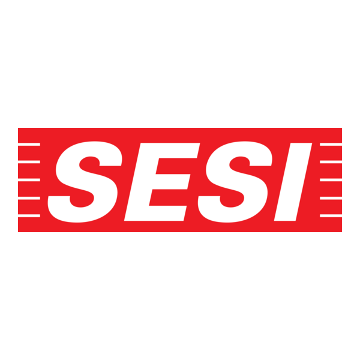

01
Identificação do desafio
Compreender o problema e definir o que se pretende solucionar por meio do projeto.

SESI CE-397 | 9º ANO
Nesta etapa da Jornada de Inovação, os estudantes do 9º ano do SESI CE-397 serão desafiados a transformar ideias em soluções, utilizando a criatividade, a investigação e a tecnologia para desenvolver seus projetos.
Conheça o projetoDepois de investigar, é hora de transformar o conhecimento em ação.
Na etapa CRIAR, os estudantes do 9º ano assumem o papel de protagonistas do processo de inovação. A partir dos conhecimentos adquiridos e dos problemas identificados, serão convidados a desenvolver ideias, planejar soluções e construir protótipos.
O trabalho envolve colaboração, criatividade, pensamento crítico e experimentação, aproximando os estudantes dos desafios reais da inovação.
Professor responsável: Marcelo
Conheça os estudantesIdentificar oportunidades, compartilhar ideias e planejar soluções para os desafios propostos.
Transformar ideias em projetos, utilizando conhecimentos, materiais e recursos tecnológicos.
Experimentar, avaliar os resultados e aprimorar as soluções desenvolvidas.
Cada etapa é uma oportunidade para aprender, experimentar e inovar.
Compreender o problema e definir o que se pretende solucionar por meio do projeto.
Organizar as ideias, pesquisar possibilidades, selecionar materiais e definir estratégias.
Construir protótipos e colocar em prática as ideias planejadas, utilizando recursos disponíveis.
Realizar testes, observar o funcionamento e identificar possíveis melhorias.
Analisar os resultados e aperfeiçoar as soluções a partir das experiências realizadas.
Compartilhar o projeto, explicar as escolhas realizadas e apresentar os resultados.
Acompanhe os momentos de planejamento, construção, experimentação e desenvolvimento dos projetos.

Organização das ideias e definição das propostas.

Construção e elaboração das soluções.

Colaboração e troca de conhecimentos.

Testes e observação dos resultados.
Um espaço para apresentar os projetos e as soluções desenvolvidas pelos estudantes do 9º ano.

Espaço destinado à apresentação das ideias, dos protótipos e das soluções criadas.

Registros das construções e dos experimentos realizados durante a jornada.

Compartilhamento das propostas e dos resultados alcançados pelos estudantes.
Acompanhe os registros em vídeo das atividades e dos projetos desenvolvidos.
Criar é experimentar, compartilhar conhecimentos e aprender também com os desafios.
Analisar problemas, avaliar possibilidades e tomar decisões.
Compartilhar ideias e trabalhar coletivamente na construção de soluções.
Explorar novas possibilidades e desenvolver ideias originais.
Testar, observar, avaliar e aperfeiçoar as soluções desenvolvidas.
Cada etapa contribui para a construção de conhecimentos e soluções inovadoras.
5º ano
Conhecer etapa9º ano
Você está aqui2º ano EM
Conhecer etapa